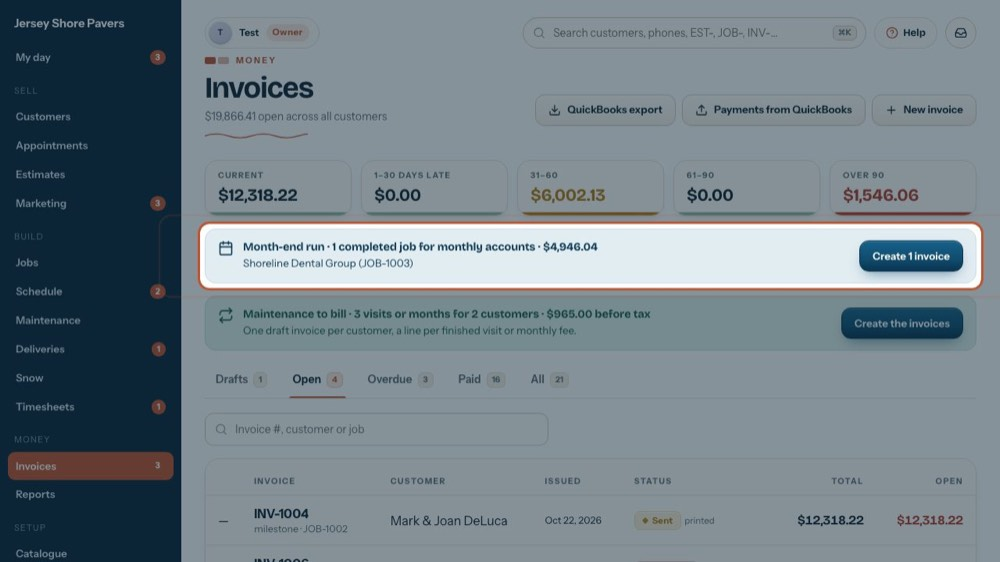
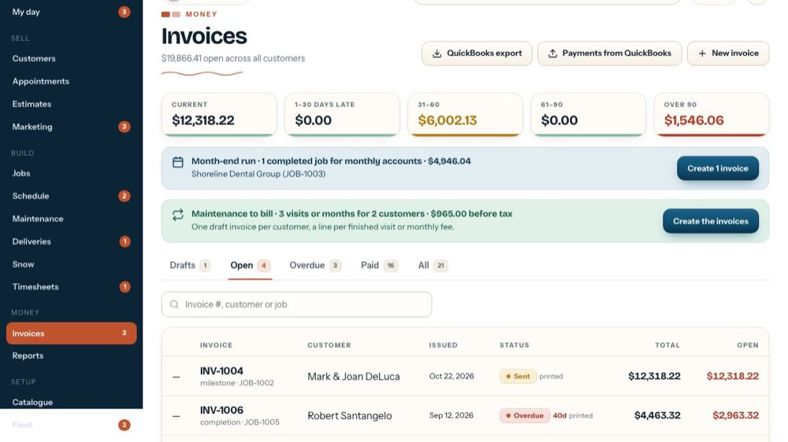
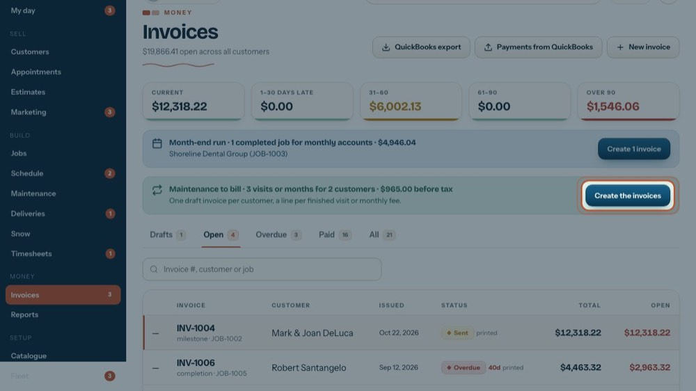
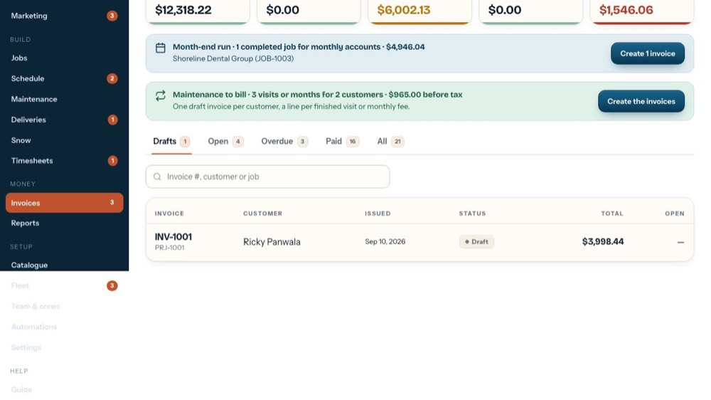

Month-end billing: monthly accounts and maintenance
In the office app, press Help and type month-end billing
: the tour plays on your own screen, with your own data.
-

1Month-end run
Customers set to 'Invoicing: Monthly' get their completed jobs billed at month end. This bar lists them with the total. No bar = nothing to bill.
-
 2
2Create the drafts
Create … invoices asks first, then makes one draft per job. They land on the Drafts tab to check before sending. The tour doesn't press it.
-

3Maintenance to bill
Finished maintenance visits and monthly fees waiting to be billed, with how many customers and the amount before tax.
-

4Create the invoices
Makes one draft per customer straight away, a line per visit or monthly fee. They land on Drafts too. The tour doesn't press it.
-
 5
5Check the drafts
Every new month-end invoice waits here as a draft.
-

6Open, check, send
Open each draft, check the lines, then Email now or Print now. That marks it sent and it moves to Open.